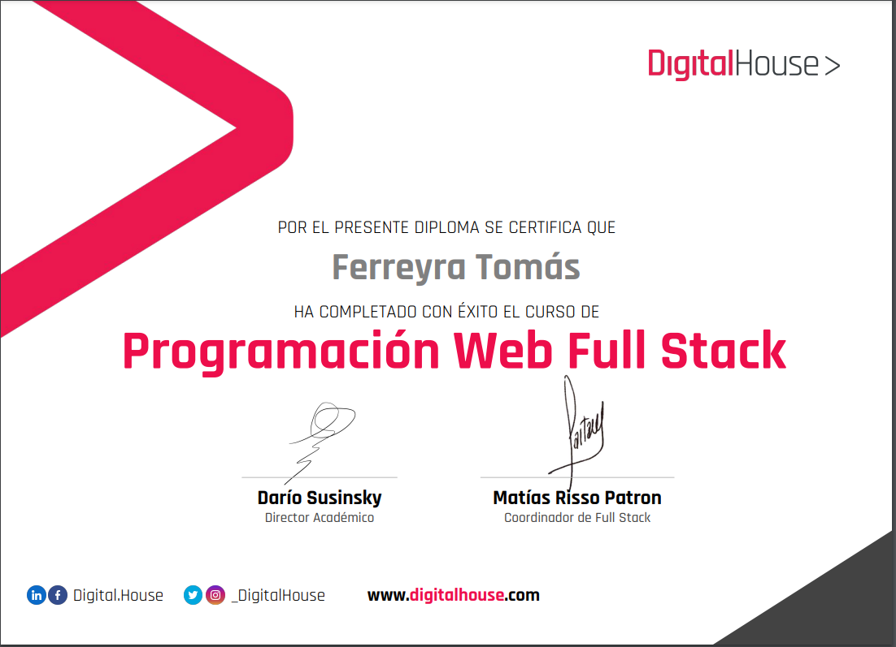

Tomás Ferreyra

Informacion Personal
Tengo 20 años, me concidero una persona capaz de trabajar en equipo de manera eficaz y eficiente, muy dispuesto a trabajar y aprender nuevas tecnicas de programacion y de co-working, me considero alguien que es capaz de mejorar el ambiente de trabajo cuando se trabaja con las personas correctas. Mis hobbies son el basket, la musica y el desarrollo front-end que es la parte de la programacionque mas me entuciasma
Formacion Academica
Educacion Nivel Secundario (Graduado): Colegio Siglo XXI (Campana)
Educacion Nivel Primario: Escuela N°17 Prof. Raúl Russel (Campana)
Nivel Universitario (En curso): Tecnicatura de Desarrollo Web U.A.D.E (C.A.B.A)
Idiomas
Conocimiento
Hice un curso intensivo de full-stak developer en Digital House, donde aprendimos a usar JavaScript, HTML, CSS, JS, React y SQL. Donde la parte que mejor aprendi y desarrole fue el front-end ya que siempre me considere una persona crativa con respecto a lo que es lo visual y lo artistico.
Titulos
- 